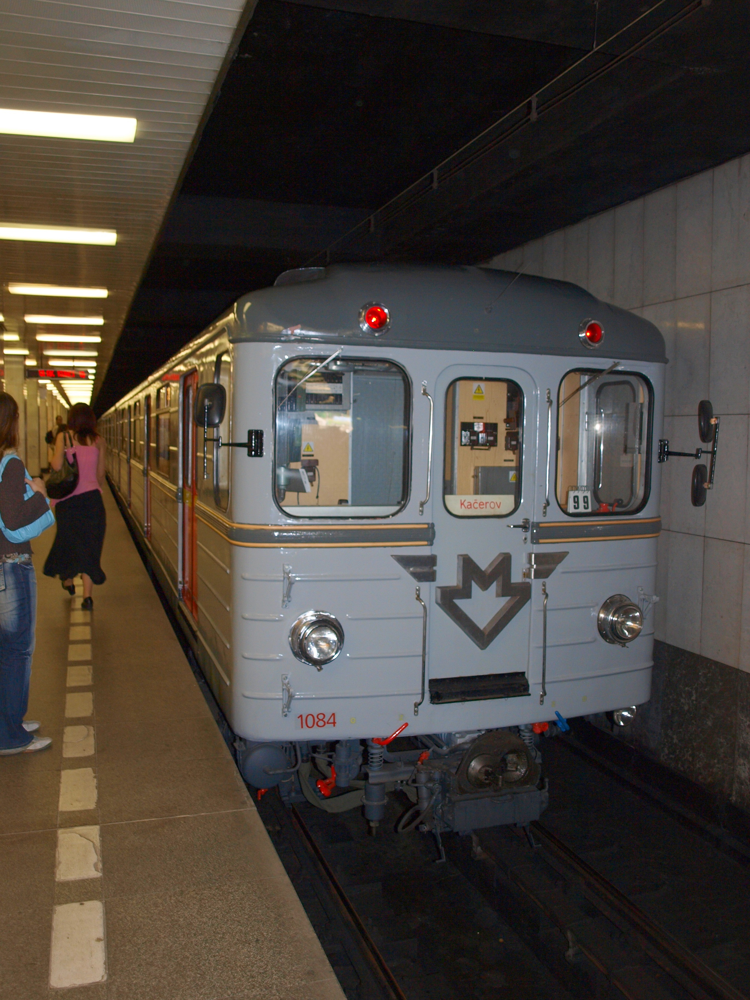

Metro (franc. Chemin de fer métropolitain, angl. Metropolitan Railway – metropolitní železnice), neboli podzemní dráha, je druh kolejové dráhy a na ní provozované městské hromadné dopravy. Většinou celá, nebo velká část trasy, je vedena podzemními tunely. Vozy metra se tak mohou pohybovat zcela nezávisle na ostatních druzích dopravy. Slovem „metro“ se obvykle označuje nejen samotná dráha, její stavby a dopravní systém, ale i vlak užívaný k dopravě na ní („metro přijelo“).
